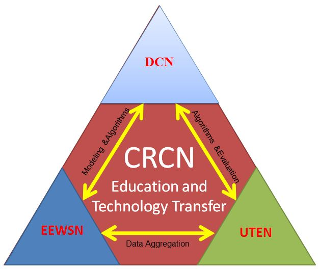
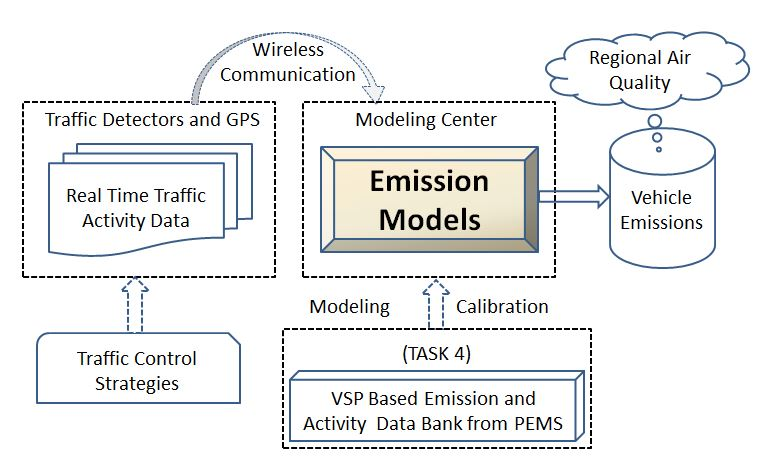
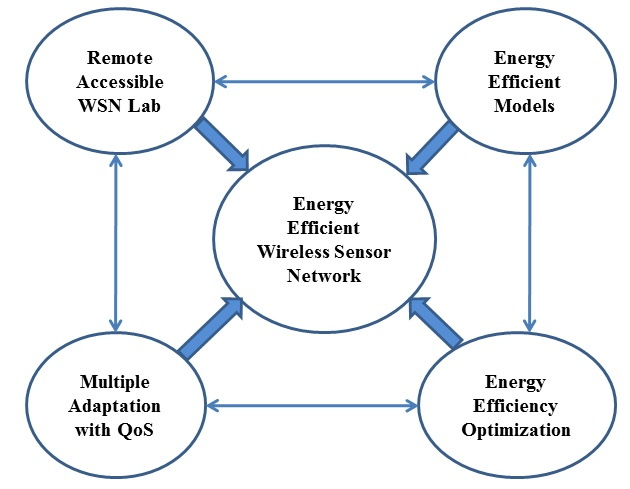
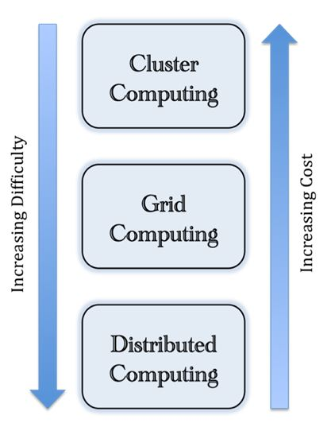
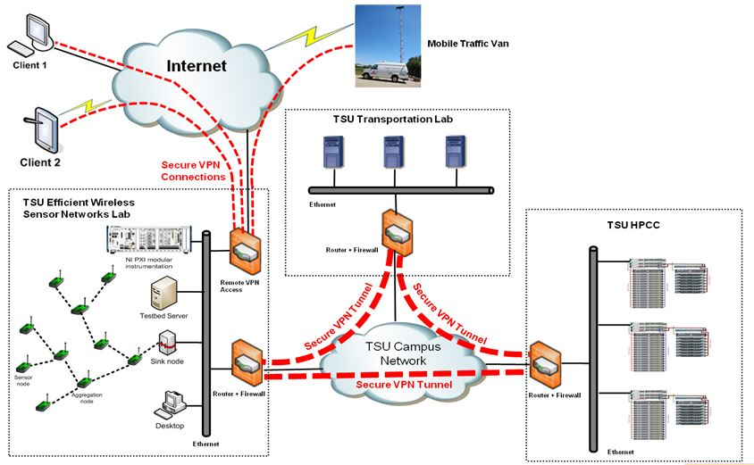

- Menu
- Summary
- EEWSN
- UTEN
- DCN
- Implementation
|
Texas Southern University (TSU) will
establish a Center for Research on Complex Networks to conduct research
in complex networks.
Three research areas of the Center are:

- Energy Efficient Wireless Sensor
Networks (EEWSN), which is to develop energy efficient schemes by
integrating secured data aggregation and dynamic power management,
investigating efficient multiple adaptation algorithms for
uncertainty-aware sensor networks, and exploring dynamic control and
optimization strategies;
- Urban Transportation Environmental
Networks (UTEN), which is to develop and implement vehicle emission
models and real-time intelligent network control methods to reduce
greenhouse gas and pollutant emissions, thereby improving urban air
quality;
- Distributed Computational Networks
(DCN), which is to develop and implement algorithms for computing on
networks for which the resource allocation is uneven.
The research activities in the Center
will involve the disciplines of computer science, mathematics, physics,
chemistry, engineering technology, environmental science, and
transportation.
The research in this Center will be
integrated with the science, technology, engineering and mathematics
(STEM) education programs.
The outcomes of the Center will increase
the number of minority and under-represented students who pursue
advanced graduate degrees, contributing to meeting the future critical
workforce needs of the nation in STEM fields.
The Department of Transportation Studies
and the Department of Chemistry will be two of the participating
Departments in this subproject of the proposed CREST Center at TSU.
The general goal of this subproject is
to develop and implement vehicle emission models and real-time
intelligent network control methods to reduce greenhouse gas and
pollutant emissions, thereby improving air quality in urban
transportation environmental networks (UTEN).
Three specific research goals and
associated objectives will be pursued:

- To develop and model air quality monitoring networks in an urban environment. The specific research objectives are:
- Developing fast-response CO2
and NOx electrochemical sensors via intelligent materials design and
engineering in selective gas permeable membranes.
- Optimizing the geographical distribution of air quality monitors.
- Integrating the gas sensing function into urban transportation environmental networks.
- To develop vehicle emission models that incorporate real-time transportation activities.
The specific research objectives are:
- Developing a Vehicle Specific Power (VSP) distribution databank.
- Developing VSP-based vehicle emission models for urban networks.
- Developing a dispersion model for vehicle emissions by incorporating the air quality monitoring data from Goal 1.
- To develop models that optimize
traffic control strategies to mitigate emission and improve air quality
on real-time basis. The specific research objectives are: (a) developing
models that optimize network topological structures to improve urban
air quality; (b) developing models that optimize traffic controls to
improve urban air quality; and (c) developing simulation tools that
incorporate real-time traffic data and optimization models to support
decision-making.
Computer Science and Engineering
Technology will be two of the participating Departments in the
development of energy-efficient wireless
sensor networks (EEWSN) in the proposed CREST at TSU.
The goals of the research proposed in
this subproject are to develop energy-efficient wireless sensor
networks through integrating data
aggregation and dynamic power management; to investigate efficient
multiple adaptation algorithms for
energy-aware sensor networks; and to explore dynamic control and
optimization strategies in wireless
sensor networks.
The specific research goals include:

- To develop energy-efficient schemes
by integrating data aggregation and dynamic power management (DPM),
including (a) the modeling and analysis of joint data aggregation and
DPM, and (b) investigation of energy consumption and sensor performance.
- To investigate efficient,
multiple-degradation algorithms for uncertainty-aware sensor networks,
including (a) discovery of multiple degradation algorithms in sensor
nodes, and (b) development of analytical method for energy-efficient
whole sensor networks with degradation features;
- To explore dynamic control and
optimization strategies, including (a) optimal design of power mode
period and (b) optimization of admission control of data packets.
- To implement research, including (a)
development of efficient simulation tools and efficient application for
testing the results of the research, and (b) establishment of
modularized wireless communication testing and measurement system.
Remote Lab
EEWSN Wiki
Computational approaches for problem
solving have proven their value in almost every field of human endeavor.

Computers are used for modeling and
simulating enumerable complex scientific and engineering problems.
From diagnosing medical conditions,
controlling industrial equipment, forecasting the weather, managing
stock portfolios, and conducting scientific investigations, computers
have become essential and irreplaceable tools in these fields.
However, one of the limitations of
computational simulation science is the speed and memory limitation of
the computational hardware utilized.
We plan to alleviate this problem by
studying methods and means for achieving highly distributed grid
computing.
Specifically, we will focus on hard
computational algorithms that do not traditionally lend themselves to
this type of parallelism.
Additionally, the general techniques
that we will develop within the program will be applicable to many other
research endeavors specifically including high performance computing,
grid computing, blocking networks and ad hoc wireless networks for which
resource allocation is uneven.
The goal of this subproject are to
improve the efficiency of distributed computing on blocking networks
with the integration of mobile ad hoc wireless networks.
The specific goals are:
- To develop distributive computing
for computational science: We will develop a general method of
distributing the computational workload of complex codes, such as the
FreeON code suite and the transportation traffic simulation codes of
UTEN.
- To develop distributed computing for
blocking and ad hoc wireless networks; we will develop methods and
algorithms for distributed computing on blocking networks, which is
highly relevant to EEWSN.
- To improve the efficiency of communications and protocols for blocking and mobile ad hoc networks.
The Center of Research on Complex
Networks (CRCN) project will engage six departments at Texas Southern
University in the scholarly activities of the project.
These departments are: the Department of
Computer Science, the Department of Engineering Technology, the
Department of Transportation, the Department of Mathematics, the
Department of Chemistry, and the Department of Physics.
Due to the interdisciplinary nature of
this project, the facilities used for the three subprojects will be
physically housed in different buildings but will be connected.
This connection will result in having a
single larger facility that ensures the integration as well as the
collaboration for all the three subprojects.
The CRCN will have the following
facilities:
These facilities will be networked
together using secure site-to-site Virtual Private Network (VPN) tunnels
over the TSU main campus network.
It will ensure that all the resources on
these sites work together as if they were located in the same physical
location.
The design and deployment of the secure
VPN tunnels will also include some redundancy to ensure that there is no
disruption to the connectivity between the sites.
In addition to the site-to-site VPN
tunnels, the CRCN will provide the infrastructure for remote users to
connect to the facilities via secure remote access VPN connectivity.
The following is a diagram that
illustrates the integration between the CRCN facilities, followed by a
description of the resources included in each facility.

The Energy Efficient Wireless Sensor
Networks Lab will be at state-of-the-art facility for both graduate and
undergraduate students participating in the research activities.
It will be a remotely accessible
laboratory and testbed.
The proposed testbed has three sub
testbeds: An indoor testbed, outdoor testbed and a body area wireless
network testbed.
It will be actively used for educational
as well as research activities.
-
Sensor Nodes: The lab will have a
total of 200 iMote sensor nodes which will be used to compose the indoor
and outdoor testbeds.
The iMote 2 is an advanced wireless
sensor node platform built around the low-power PXA271 XScale CPU and
integrates an 802.15.4 compliant radio.
It has a modular and stackable
design with interface connectors for expansion boards on both its top
and bottom sides.
-
Testbed Server: The server is a
MySQL-based database server that will be used to store the experimental
data, the information used to generate web content, and the state
driving test bed operation.
The server will be connected to the
lab’s local area network and will be remotely accessible by users
through a web interface designed to allow job creation, scheduling, and
data collection, as well as an administrative interface to verify
testbed control functionality.
-
Measurement Instrumentation: It will
include the hardware as well as the software needed to take
measurements from the sensor nodes.
The proposed hardware is based on
National Instruments’ NI PXI modular instrumentation and the software is
NI LabVIEW which is a powerful graphical environment developed based on
the concept of virtual instrumentation (VI) and utilizing computer
technologies in combination with flexible software and modular hardware
to create interactive computer-based instrumentation solutions.
LabVIEW is popularly deployed
software used for both academic and industrial applications.
TSU has developed advanced
transportation laboratories for transportation education and research.
Equipment includes an Autoscope Mobile
Traffic Van, Full-Motion driver Simulator, real-time traffic monitoring
system, and a portable emission measurement system (PEMS).
TSU has signed an agreement with TxDOT
in Houston TranStar by which TSU is able to access the real-time traffic
data provided by TranStar.
TSU also owns additional equipment, such
as GPS, traffic counters, etc.
All of this advanced equipment will
provide a solid infrastructural foundation to support the research as
well as the education delivery proposed for this project.
In addition, all of the researchers
including graduate research assistants in the Department of
Transportation Studies will be have state-of-the-art personal computers.
A computer laboratory is available in
the department, which includes 20 networked workstations.
All computers are networked and
connected to the Internet through TSU’s mainframe computer network
system, which enhances the collection and dissemination of research
information.
The TSU central library is a member of
the Houston Area Research Library Consortium (HARLC), which includes
Rice University, the University of Houston, Praire View A&M
University, Texas A&M University, and the University of Texas.
Currently, the computers in the
Department of Transportation Studies are installed with the following
transportation software: CORSIM, VISSIM, INTEGRATION, TRANSYT-7F,
PASSER, ArcView, TransCAD, EMME/2, QRS II, MOBILE6, EMFAC, CMEM, ONROAD,
STNCHRO, DYNAMIC, etc.
In addition, these computers have most
of the general computer application software installed, such as MS
Office, statistical analysis tools (SPSS), and others.
The installed computer programming
compilers include Power FORTRAN, Visual BASIC, Visual C++, MATLAB, etc.
Texas Southern University's High
Performance Computing Center (TSU-HPCC) was established in 2008 to
promote research and teaching on campus through integrating leading edge
high performance computing and visualization for the faculty, staff,
and students of Texas Southern University.
The HPCC provides consulting and
assistance to campus researchers who have experimental software and/or
hardware needs.
We also provide training in parallel and
grid computing.
HPCC will serve as a liaison between the
various teams engaged in the proposed research.
We work to support, configure, and port
applications to HPCC resources (http://coset.tsu.edu/hpcc).
-
Ares, installed in December 2008 has
sixteen dual-slot, quad-core nodes with Intel Xeon 5350 2.0 GHz
processors with 8 Gigabytes of memory connected via dual Gigabit
Ethernets.
The full parallel cluster has a
total of 128 cores and a total memory of 128 Gigabytes, with a peak
speed of 0.672 Teraflops (http://ares.tsu.edu/).
-
Hades, installed in January 2010,
has eight dual- slot, hyper- threaded quad core nodes with the Intel
E5520 2.33 GHz Xeon Processor with 12 Gigabytes of Memory connected via a
10 Gigabit Ethernet using an ultra low latency Arista 7124S switch.
The full parallel cluster has a
total of 128 virtual cores and a total memory of 96 Gigabytes, with a
peak speed of 0.783 Teraflops.
-
Charon, installed in February of
2010, is a Condor (OpenMPI configuration) grid- based distributed
computer system.
At present, it has eight 3.0 GHz
Intel xenon’s with 1GByte of memory, four duel- core 2.5 GHz with 2GByte
of memory and two quad- core 2.2 GHz with 4 GByte of memory.
The Ethernet is variable between 100
MBit to 1 GBit.
It will be our main test bed for
development of the ideas within this proposal on grid- based and
blocking networking.
Except for the equipment we propose to
purchase, the following equipment in the Computer Labs of the Computer
Science and Engineering Technology Departments will be used by all the
CREST teams:
- Eight NI PCI-5112,100 MHz, 100 MS/s 8-Bit Digitizer.
- Seven NI PCI-6024E, 200 kS/s, Multifunction DAQ.
- One NI SC-2075, connector board.
- Ten NI LabVIEW 8.5.
- Six multi-channel oscilloscopes.
- Five Mathworks Matlab 7.0.
- One HP ProLiant DL365 server
- Seven NI ELVIS.
|